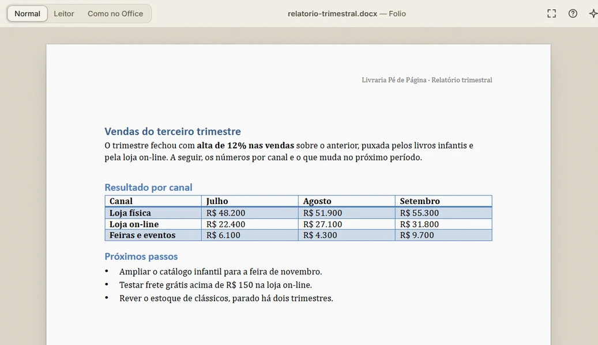
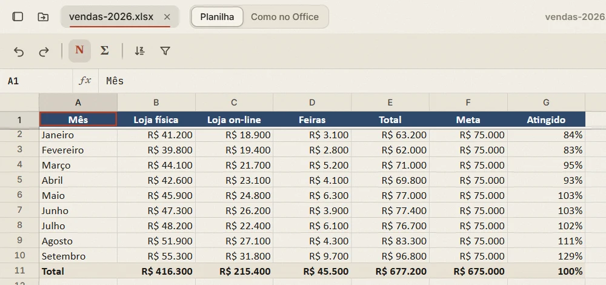
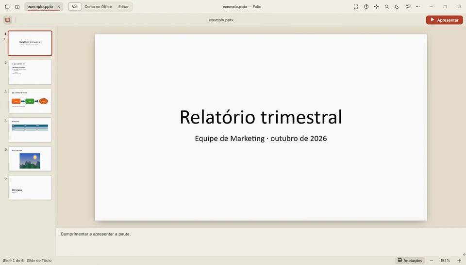

Word, Excel, PowerPoint e PDF sem precisar do Office. Fotos, vídeos, músicas, código e livros. Mais de 300 formatos, de graça, no Windows, no Linux e no Mac.
Usa outro sistema? Veja todas as versões.
O Folio é um app para computador. Mande o link para você mesmo e baixe no Windows, no Mac ou no Linux.

Documentos, planilhas e apresentações do Word, do Excel e do PowerPoint abrem com a aparência original, para ler e editar. PDFs também, com anotação e assinatura.


| Sistema | Arquivo | Como instalar | Tamanho |
|---|---|---|---|
| Windows 10 e 11o seu sistema | Folio para Windows | Descompacte e clique duas vezes em Instalar. | |
| Mac com Apple Silicon (M1 ou mais novo)o seu sistema | Folio para Mac | Arraste para Aplicativos. | |
| Mac com Intelo seu sistema | Folio para Mac (Intel) | Arraste para Aplicativos. | |
| Linux: Ubuntu, Debian, Minto seu sistema | Pacote .deb | Abra o arquivo e clique em Instalar. | |
| Linux: qualquer distribuiçãoo seu sistema | AppImage | Permita executar e abra. |
Sempre a versão mais recente. Depois de instalado, o Folio avisa quando houver versão nova.
O Folio abre e edita tudo no seu computador e não coleta dados de uso.